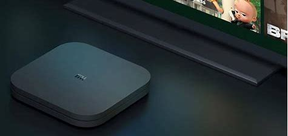
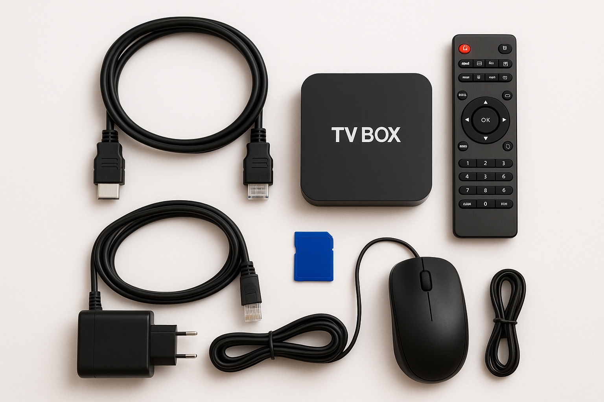

TV BOX
A TV Box é um dispositivo com sistema operacional próprio (Android TV ou tvOS), equipado com placa de vídeo, memória, processador e controle remoto. Sua função é transformar uma TV comum em uma Smart TV, permitindo o acesso a plataformas como YouTube, Netflix e outras.
.jpg)
CRIADORA DO SITE
A aluna Raissa Martins Nascimento criou o site "Conversão de TV BOX" como parte do seu estágio para conclusão do curso Técnico em Informática no IFNMG-Salinas no ano de 2023, projeto criado e supervizionado por Caio lamas, professor do instituto. Esse projeto teve colaboração da aluna Bianca Sâmi Martins Araujo, que ficou responsavel pela parte escrita , e por outros alunos que participaram da pesquisa.
IMPORTÂNCIA DO PROJETO
O Projeto representa uma iniciativa inovadora que alia sustentabilidade, inclusão digital e educação. Ao reaproveitar aparelhos de TV Box apreendidos pela Receita Federal, o projeto evita o descarte de eletrônicos e promove o acesso à tecnologia em escolas públicas. Dessa forma, contribui para a redução da desigualdade digital, oferece novas oportunidades de aprendizado e fortalece a formação educacional de estudantes em diversas regiões do país.
Projeto Além do Horizonte
A Anatel, em parceria com a Receita Federal, a Ancine e instituições de ensino federais, criou o Projeto “Além do Horizonte” com o objetivo de transformar aparelhos de TV Box irregulares apreendidos em mini computadores para uso educacional. Esses dispositivos são reaproveitados e distribuídos a escolas públicas. O projeto conta com a participação das seguintes instituições: IFNMG-Salinas,Instituto Federal Sul de Minas Gerais, Instituto Federal do Triângulo Mineiro, Universidade Federal de Lavras, Universidade Federal de Itajubá, Universidade do Estado de Minas Gerais, Universidade Federal de Uberlândia, Universidade Federal do Rio Grande do Sul, Universidade Federal do Espírito Santo Instituto Federal de São Paulo entre outros. Institutos Federais do Norte de Minas Gerais.

Tutorial e Etapas da Conversão.
TUTORIAL
Esse tutorial tem como objetivo te ensinar a transformar o seu aparelho TV Box em um mini computador
de maneira prática, fácil e rápida, com um passo a passo específico de cada etapa do processo.
Para fazer a sua conversão siga as etapas abaixo:
1. Insira o cartão SD na TV Box.
2. Conecte teclado, mouse e cabo HDMI na TV Box.
3. Conecte o cabo de força (A TV BOX ligará altomaticamente).
4. Selecione a Opção 3 (Erase Flash) e aguarde o processo.
5. Selecione a Opção 5 (Burn Image to Flash) e aguarde.
6. Selecione a Opção 9 (Shutdown) para desligar.
7. Remova o cartão SD da TV Box.
8. Desconecte o cabo de força.
9. Conecte o cabo de rede à TV Box (com conexão ativa).
10. Reconecte o cabo de força.
11. Aguarde a tela ”WELCOME TO ARMBIAN”.
12. Configure a senha do root: ifsal2023.
13. Escolha o shell de comando: Opção 2 (zsh)→ Enter.
14. Crie o usuário: tvbox.
15. Defina a senha do usuário: tvbox2023.
16. Se a internet estiver conectada, confirme a localização: America/São Paulo → Y → Enter.
Caso não haja conexão de rede:
16.1 Set user language based on your location? Selecione N e pressione enter.
16.2. Siga esta sequência:
- 124- Pt\_BR.UTF-8 → Enter
- 9- Brasil → Enter
- 8- Brazil (southeast: GO, DF, MG, ES etc.) → Enter
- Confirme: Y → Enter
17. No terminal do Linux, digite:
"sudo apt-get purge locales && apt install language-pack-br && locale-gen pt_BR.UTF-8 && apt install
libreoffice && apt install libreoffice-l10n-pt-br && apt update && apt upgrade"
18. Digite a senha: tvbox2023 → Enter.
E AGORA O SEU MINI COMPUTADOR ESTA PRONTO PARA O USO!